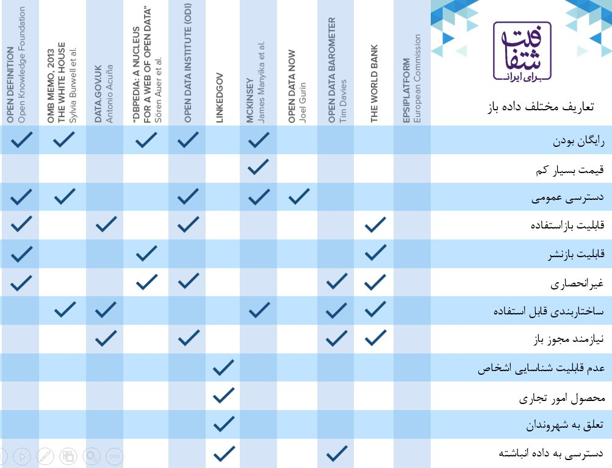
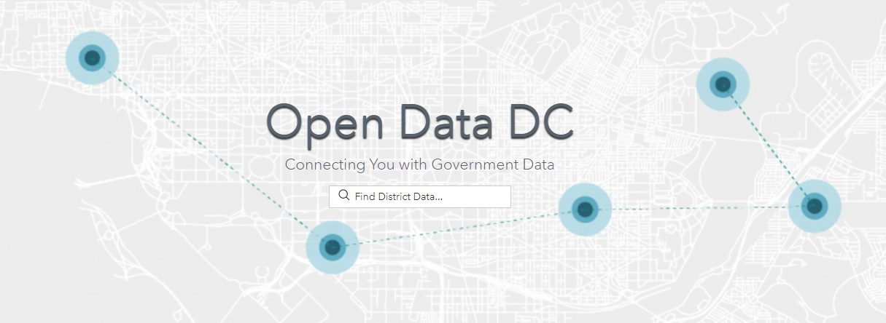
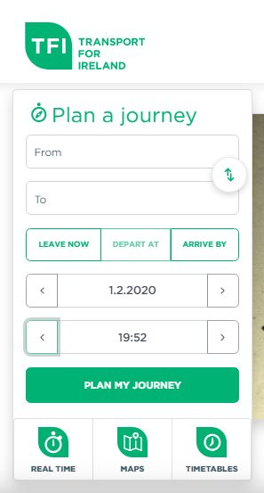
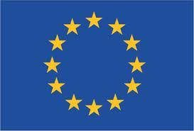
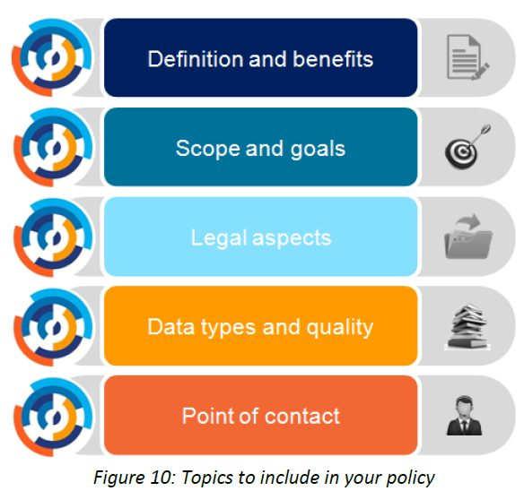

شمارهی سوم با این ادعا شروع میشود که دادهی باز در مرکز یک دگرگونی جهانی نشسته است، و بعد سراغ چیزی ملموستر میرود: رقابتها و هکاتونهایی که کشورها برای بیرونکشیدن ارزش از دادههایشان برگزار میکنند.
اقدام پیشنهادی این شماره تدوین خطمشی دادهی باز است و شاخصش گزارش فهرست دادهی باز.
دادهی باز، مرکز تحول جهانی است
دنیا شاهد دگرگونی چشمگیری است که از تکنولوژی و رسانهی دیجیتال بهره برده و از دادهها و اطلاعات تغذیه میشود. این دگرگونی پتانسیل بالایی برای ایجاد و پرورش دولتها، سازمانهای جامعهی مدنی و بخش خصوصیِ شفافتر، مسئولیتپذیرتر، کارآمدتر، پاسخگوتر و اثربخشتر را دارد. همینطور میتواند پشتیبانی از طراحی، ارائه و ارزیابی اهداف توسعهی پایدار را در مقیاس جهانی دارا باشد.
ایجاد جامعهای شکوفا، منصفانه و عادلانهتر نیازمند این است که دولتها شفاف و پاسخگو باشند و با شهروندان تعامل منظم و معنادار داشته باشند. با توجه به این موضوع، یک انقلاب جهانی داده در حال رخ دادن است که به دنبال ارتقای همکاری حول چالشهای اجتماعی کلیدی، نظارت عمومی موثر بر فعالیتهای دولت و حمایت از نوآوری، توسعهی پایدار اقتصادی و ایجاد و توسعهی سیاستها و برنامههای عمومی موثر و کارآمد میباشد.
فرصتهای دادهی باز
دادهی باز فرصتی ارائه میکند که باید به خوبی از آن بهره برد.
- دادهی باز به کاربر اجازه میدهد که با ردیابی داده در میان تعدادی از برنامهها و بخشها، بتواند مجموعهای از دادهها را با هم مقایسه و ترکیب نماید و ارتباط میان آنها را دنبال کند. هنگامی که داده به صورت کارآمد ترکیب و مقایسه شود، میتواند به برجسته کردن روندها، شناسایی چالشهای اجتماعی و اقتصادی و نابرابریها و ارزیابی پیشرفت در برنامهها و خدمات عمومی کمک کند.
- دادهی باز میتواند به دولتها، شهروندان و سازمانهای جامعهی مدنی و بخش خصوصی قدرت بخشد که در راستای کسب نتایج بهتر برای خدمات عمومی در زمینههایی از قبیل سلامت، آموزش، امنیت عمومی، حفاظت از محیط زیست، حقوق بشر و حوادث طبیعی گام بردارند.
- دادهی باز میتواند با حمایت از ایجاد و تقویت بازارها، بنگاهها و مشاغل جدید به ایجاد رشد اقتصادی فراگیر کمک کند. در صورتی که سازمانهای جامعه مدنی و بخش خصوصی بیشتری شیوههای مناسبی از دادهی باز را اتخاد کنند و دادهی خود را با عموم به اشتراک بگذارند، این منافع بیشتر خواهد شد.
- دادهی باز به بهبود جریان اطلاعات درون و بین دولتها و شفافسازی تصمیمات و فرآیندهای دولتی کمک میکند. افزایش شفافیت، پاسخگویی و حاکمیت خوب را ترویج داده، مناظرات عمومی را بهبود میبخشد و به مبارزه با فساد کمک مینماید.
- دادهی باز فرصتهایی را برای ایجاد نوآوری و راهحلهای سیاستی مبتنی بر شواهد ارائه میکند و از منافع اقتصادی و توسعهی اجتماعی برای تمامی اعضای جامعه حمایت میکند. دادهی باز میتواند این کار را به شیوههای زیر انجام دهد؛ برای مثال:
- حمایت از سیاستگذاری مبتنی بر شواهد: ترغیب استفادهی دولتها از دادهها برای توسعهی سیاستها و تصمیمگیری مبتنی بر شواهد، که نتایج بهتر سیاستهای عمومی را ممکن ساخته و توسعهی پایدار اقتصادی و اجتماعی را تحکیم میبخشد.
- امکان همکاری میان بخشهای مختلف: پشتیبانی از همکاری میان دولتها، شهروندان و سازمانهای جامعه مدنی و بخش خصوصی در طرحریزی سیاستها و ارائه خدمات عمومی بهتر.
- دنبال کردن پول: نشان دادن چگونگی و محل مصرف بودجه عمومی که به دولتها انگیزه میدهد که نشان دهند که از بودجه عمومی به صورت بهینه استفاده میکنند
- بهبود حاکمیت بر منابع طبیعی: افزایش آگاهی نسبت به اینکه منابع طبیعی کشورها چگونه استفاده میشوند، درآمدهای حاصل از مواد استخراجی چگونه مصرف میشوند و همینطور اراضی چگونه مبادله و مدیریت میشوند.
- اثر نظارتی: حمایت و پشتیبانی از ارزیابی اثر برنامههای عمومی که به نوبهی خود به دولتها و سازمانهای جامعه مدنی و بخش خصوصی اجازه میدهد که به نیازهای خاص جوامع محلی پاسخ موثرتری دهند.
- ترویج رشد متوازن: حمایت و پشتیبانی از رشد پایدار و فراگیر از طریق ایجاد و تقویت بازارها، بنگاهها و مشاغل؛
- دادههای مرتبط با موقعیت جغرافیایی: فراهم آوردن مراجع مکانی و مشاهدات هوایی زمین که به مقایسهپذیری و همکنشپذیری و تحلیل موثر داده با امکان طبقهبندی جغرافیایی دادهها کمک مینمایند؛ و
- تصمیمگیری بهتر: قادر ساختن شهروندان به تصمیمگیریهای آگاهانهتر نسبت به خدماتی که دریافت میکنند و استاندارهایی که باید از آن خدمات انتظار داشته باشند.
منبع سایت اندیشکده از منشور
معیارهای موجود در تعاریف داده ی باز
GovLab با توجه به تعاریف مختلف از دادهی باز، ۱۰ تعریف از آنها را جمع کرده و معیارها را در یک «جدول مقایسه ای» (که در زیر مشاهده میکنید) آورده است. این ماتریس ضمن ایجاد بحث در مورد اصطلاحات به توسعه تعاریف نیز کمک میکند.

http://odimpact.org/resources.html
منبع دیگر که توضیحاتش کاملتره ولی جدول جابه جایی داره
رقابتهای جهانی دادهی باز
ساختار این رقابتها به این شکل است که تعدادی مجموعه داده منتشر شده و سپس برنامهنویسان یک چارچوب زمانی کوتاه دارند – از کمتر از ۴۸ ساعت تا چند هفته – تا با استفاده از داده برنامههای کاربردی ایجاد کنند. سپس جایزهای به بهترین برنامه کاربردی داده میشود. این رقابتها در چندین کشور از جمله بریتانیا، ایالات متحده، استرالیا، اسپانیا، دانمارک و فنلاند برگزار شدهاند. از این رقابتها به نامهای همچون Hachdays یاد میشود.
نمونههایی از رقابتها
راه بهتری به ما نشان بده
اولین رقابت از این نوع در جهان بود. این برنامه توسط «کارگروه قدرت اطلاعات» در دولت بریتانیا با سرپرستی وزیر کابینه تام واتسون در مارس ۲۰۰۸ آغاز شد. این رقابت میپرسید «با اطلاعات عمومی چه چیزی تولید خواهید کرد؟» و به روی برنامهنویسان سراسر دنیا باز بود با یک جایزه هوسانگیز ۸۰۰۰۰ پوندی برای پنج برنامه کاربردی برتر.

برنامههای کاربردی برای دموکراسی
یکی از اولین رقابتها در ایالات متحده، در اکتبر ۲۰۰۸ توسط ویوک کوندرا راهاندازی شد، که در آن زمان مدیر ارشد فناوری (CTO) دولت ناحیه کلمبیا (DC) بود. کوندرا یک کاتالوگ داده DC پیشگامانه ایجاد کرد، data.octo.dc.gov، که شامل مجموعه دادههایی چون آمار بلادرنگ جرم، نمرات آزمونهای مدرسه، و شاخصهای فقر بود. در آن زمان جامعترین کاتالوگ داده محلی در جهان به شمار میرفت. چالش این بود که آن را برای شهروندان، بازدیدکنندگان، کسب و کارها و موسسات دولتی واشنگتن دی سی مفید کنند.
راهحل خلاقانه ایجاد رقابت برنامههای کاربردی برای دموکراسی بود. استراتژی این بود که از مردم درخواست شود با استفاده از داده موجود در کاتالوگ داده جدیدا عرضه شده، برنامههای کاربردی بسازند. این رقابت دارای قابلیت تحویل آنلاین برنامههای کاربردی، جوایز کوچک بسیار به جای تعداد اندکی جایزه بزرگ، و چندین دسته مختلف و همچنین جایزهای با عنوان «انتخاب مردم» بود. این رقابت برای ۳۰ روز در جریان بود و هزینهای ۵۰۰۰۰ دلاری برای دولت دی سی در بر داشت. در عوض، مجموع ۴۷ برنامه کاربردی برای آیفون، فیسبوک و وب ساخته شدند که ارزش تقریبی آنها برای اقتصاد محلی بیش از ۲۶۰۰۰۰۰ دلار بود.
چالش Abre Datos (داده باز) سال ۲۰۱۰
این چالش در آوریل ۲۰۱۰ در اسپانیا برگزار شد و از توسعهدهندگان درخواست میکرد با استفاده از دادههای عمومی ظرف ۴۸ ساعت برنامههای کاربردی منبع باز ایجاد کنند. رقابت ۲۹ تیم مشارکتکننده داشت که برنامههای کاربردی ساختند که شامل یک برنامه برای گوشی همراه جهت دسترسی به اطلاعات ترافیک در کشور باسک، دسترسی به داده در اتوبوسها و ایستگاههای اتوبوس در مادرید بود که به ترتیب جایزه اول و دوم ۳۰۰۰ یورویی و ۲۰۰۰ یورویی را از آن خود کردند.
Nettskap ۲.۰
در آوریل ۲۰۱۰، وزارت مدیریت دولت نروژ «Nettskap ۲.۰» را برگزار کرد. توسعهدهندگان نوروژی – شرکتها، موسسات یا اشخاص دولتی – به چالش کشیده شدند تا ایدههای پروژه مبتنی بر وب در حوزه توسعه خدمات، فرآیندهای کاری کارآمد، و افزایش مشارکت دموکراتیک معرفی کنند. استفاده از داده دولت صریحا مورد تشویق قرار گرفته بود. گرچه آخرین مهلت برنامه کاربردی تنها یک ماه بعد، ۹ ماه می، بود وزیر ریگمور اسرود اعلام کرد که تعداد پاسخها «چشمگیر» بود. در مجموع ۱۳۷ برنامه کاربردی دریافت شد، که بیش از ۹۰ مورد از آنها روی بازاستفاده اطلاعات دولتی ایجاد شده بودند. مجموع ۲.۵ میلیون کرون بین ۱۷ برنده توزیع شد؛ در حالیکه کل مبلغ بهکاررفته برای ۱۳۷ برنامه کاربردی ۲۸.۴ میلیون کرون بود.
مشاپ استرالیا
گروه ضربت ۲.۰ دولت استرالیا از شهروندان دعوت کرد لزوم سودمندی دسترسی باز به اطلاعات دولت استرالیا برای توسعه اقتصادی و اجتماعی کشور را نشان دهند. رقابت از ۷ اکتبر تا ۱۳ نوامبر ۲۰۰۹ جریان داشت. گروه ضربت برخی مجموعه دادهها را تحت یک مجوز باز و انواع مختلفی از فرمتهای قابل بازاستفاده منتشر کرد. ۸۲ برنامه کاربردی که وارد رقابت شدند شاهد بیشتری بر برنامههای کاربردی جدید و خلاقانه هستند که میتوانند از انتشار داده دولت به صورت باز بوجود بیایند. اکنون GovHack همه ساله در چندین منطقه در سراسر استرالیا و نیوزلند برگزار میشود.
منبع سایت اندیشکده
زمان واقعی اطلاعات مسافر
زمان واقعی اطلاعات مسافر به عموم مردم کمک می کند تا سفرهای خود را بهتر برنامه ریزی کنند.
سازمان حمل و نقل ملی ایرلند (NTA) در «برنامه ریز مسافرت ملی» با هدف برنامه ریزی سفر، زمانبندی، اطلاعات سفر و با استفاده از کلیه ارائه دهندگان دارای مجوز حمل و نقل عمومی در سراسر ایرلند، اطلاعاتی مربوط به خدمات قطار، اتوبوس، تراموا، کشتی و تاکسی را از طریق داده باز فراهم می کند.
- برنامه ریز، زمان اعزام وسایل نقلیه عمومی را فراهم کرده و امکان برنامه ریزی کامل سفر را از طرق مختلف شامل پیاده روی، اتوبوس، لواس(Luas) و راهاهن ایرلند و زمان عبورآنها فراهم میکند.
- از طریق سایت Transportforireland.ie میتوان بصورت آنلاین به آن دسترسی پیدا کرد یا با دانلود برنامه آن، از آن استفاده کرد.
- Dublin Bus اپلیکیشن زمان واقعی خود را دارد و برنامه های دیگری برای شبکه اتوبوس دوبلین وجود دارد که اطلاعات را به روش های مختلف ارائه می دهد.
- داده های باز نقش ثالث برنامه Google Maps، نقشه های بینگ، نقشه های یاهو و HERE را در ساخت یک برنامه ریز حمل و نقل عمومی در محصولات خود تسهیل کرده است.
- از داده های باز برای ارائه جزئیات به شهروندان و برای پیدا کردن و دسترسی به پارکینگ استفاده می شود.
- برنامه پارکینگ موبایل ParkYa از طریق داده باز به شهرها کمک می کند که اطلاعات پارکینگ هایشان را برای عموم، بیشتر در دسترس قرار دهند.

صفحه ۷ استراتژی داده باز ایرلند
منبع
اقدام پیشنهادی سوم: اتخاذ یک خطمشی داده باز
به منظور تسهیل توسعه داده باز در کشور، توصیه می شود که یک خط مشی داده باز تنظیم کنید.
خط مشی دادهی باز یکی از مؤثرترین اسناد برای جزییات آرمانها و روشی است که قصد تحقق آن را دارید. از اجرای شما پشتیبانی می کند و استانداردی را برای این زمینه تعیین می کند. تحول را ایجاد خواهد نمود، شفافیت سازمان شما را افزایش می دهد و بهترین کاربرد از داده های شما را تضمین میکند! ترجمه استراتژی داده باز شما به یک خطمشی منسجم و محکم، برای اطمینان از اجرای موفقیت آمیز آن از اهمیت ویژهای برخوردار است. در ابتدا، یک مرور کلی از خطمشی ارائه میشود. پس از آن، محتوای این خطمشی به تفصیل شرح داده میشود.
این خط مشی شامل چه بخشهایی است؟ چه اطلاعاتی منتشر خواهید کرد؟ تحت چه شرایطی؟ در چه زمانی؟ در چه مواقعی(بازهای)؟ چرا؟ چه تأثیراتی از آن انتظار میرود؟ چه مزایایی دارد؟ به طورکلی این خط مشی به تمام سؤالات مربوط به افراد درون و خارج از سازمان شما پاسخ خواهد داد. همچنین به موارد ذیل نیز میبایست توجه نمود:
- چندین خطمشی در دسترس برای توجه وجود دارد. مطابق با برنامه خود، اطمینان حاصل کنید که این خط مشی روی میز کسانی که وظیفه انتشار داده ها را دارند، قرار میگیرد.
- شما می توانید در مورد کاربردها مانند بودجه، جنبه های فنی و عملی و محدودیتهای قانونی، سؤالات زیادی را از ذینفعان داشته باشید. بنابراین اطمینان حاصل کنید که مشورت و مشارکت کافی صورت می گیرد.
- خط مشی شما باید مباحثی از قبیل تعریف و مزایای مورد انتظار، دامنه سیاست و نتیجه مورد انتظار، جنبه های قانونی و غیره را دربر بگیرد.
- درنهایت ممکن است تعریف انواع داده ها و کیفیت داده ها را در نظر بگیرید و یک سازمان، بخش یا واحد را به عنوان مسئول اجرای خط مشی باز داده موظف کنید.
به طور نمونه و در عمل میتوان از توصیه های پورتال داده باز اروپا یا منشور داده باز استفاده نمود.


معرفی شاخصهای داده باز: گزارش فهرست دادهی باز
این ارزیابی یکی از پروژههای سازمان بینالمللی وغیرانتفاعی دیدهبان دادهی باز می باشد که از سال ۲۰۱۵ به بررسی درگاههای دفتر ملی آمار کشورها میپردازد. فهرست دادهی باز با هدف کمک به شناسایی شکافها، ترویج سیاستهای داده های باز، بهبود دسترسی و تشویق مذاکره و گفتگو بین دفاتر ملی آمار کشورها (NSOs) و همچنین کاربران داده، به ارزیابی درگاههای ملی آمار پرداخته است. هدف ODIN ارائه یک اندازه گیری عینی و قابل تکرار از آمارهای ملی در دسترس عموم بوده که به پایبندی آنها به استانداردهای داده باز نیز توجه می کند. نحوه ارزیابی ODIN بصورت طیفی است؛ یعنی نتایج را به جای رتبهبندی مطلق، آنها در یک طیف از باز تا بسته ارزیابی نموده و نمایش میدهد. در سایت رسمی این شاخص امکان دریافت نتایج به صورت جزئیتر و براساس ابعاد، بخشها، گروهها و معیارهای ارزیابی برای سالهای مختلف وجود دارد. همچنین قابلیت مقایسه نتایج درسطوح ملی(بین کشورها)، منطقهای، بینالمللی و یا براساس گروههای درآمدی وجود دارد.
بهترین کشورها: آخرین گزارش این شاخص مربوط به سال ۲۰۱۸/۲۰۱۹ می باشد که ۱۷۸ کشور جهان را شامل میشود. در نتایج این شاخص کشورهای سنگاپور، دانمارک، هلند، لهستان و اسلونی دارای رتبه های یکم تا پنجم هستند و بهترین امتیازها در ابعاد بازبودن، میزان پوشش و نمره کل را به خود اختصاص دادهاند.
وضعیت ایران: درگاه ملی آمار جمهوریاسلامیایران در میان ۱۷۸ کشور، با امتیاز کلی ۳۸%؛ رتبه ۱۱۳ را کسب کردهاست. این امتیاز ترکیبی ازمیزان پوشش با ۴۷% و میزان بازبودن داده با ۲۹% میباشد. در نتایج این گزارش که وضعیت کلی در سه دسته اجتماعی، اقتصادی و زیست محیطی نیز ارائه شده که جمهوری اسلامی ایران دراین سه گروه به ترتیب امتیازهای ۳۳%، ۴۱% و ۳۹% را کسب نموده است. جزئیات مربوط به هرگروه و معیار نیز در سایت این پروژه وجود دارد. نمای کلی وضعیت ایران در ارزیابیهای سالهای ۲۰۱۵، ۲۰۱۷ و ۲۰۱۸ نیز به شرح ذیل میباشد:
| شاخصهای فرعی | میزان پوشش | میزان باز بودن | مجموع | ||||||
| ۲۰۱۵ | ۲۰۱۷ | ۲۰۱۸ | ۲۰۱۵ | ۲۰۱۷ | ۲۰۱۸ | ۲۰۱۵ | ۲۰۱۷ | ۲۰۱۸ | |
| آمار اجتماعی | ۳۹ | ۲۸ | ۳۸ | ۲۸ | ۲۷ | ۲۹ | ۳۳ | ۲۷ | ۳۳ |
| آمار اقتصادی | ۶۷ | ۵۷ | ۵۴ | ۲۴ | ۳۴ | ۳۱ | ۴۳ | ۴۴ | ۴۱ |
| آمار زیست محیطی | ۳۲ | ۳۸ | ۵۲ | ۲۴ | ۳۰ | ۲۸ | ۲۸ | ۳۴ | ۳۹ |
| مجموع | ۴۴ | ۴۰ | ۴۷ | ۲۵ | ۳۰ | ۲۹ | ۳۴ | ۳۵ | ۳۸ |
ابعادومؤلفهها: در این شاخص به بررسی دو بعد میزان پوشش و میزان بازبودن دادههای آماری منتشرشده می پردازد. بعد پوشش به میزان دسترسی به دادههای آماری و بعد بازبودن به مسیری که دادهها در دسترس قرار میگیرند؛ اشاره دارد. دادههای آماری بخشی از گروههای مهم آماری هرکشور هستند که در سه بخش آمارهای اجتماعی، اقتصادی و زیستمحیطی تقسیمبندی شدهاند. تعداد گروهها در این ۳ بخش ۲۱ عنوان میباشد که در جدول شماره یک آمده است. هر گروه از دادههای آماری (از۲۱ عنوان) با ۱۰ معیار (پنج معیار برای سنجش میزان پوشش و پنج معیار برای سنجش میزان باز بودن) ارزیابی شده و نمرات کل با ادغام امتیاز گروهها و معیارها محاسبه میشود. امتیاز کلی نمایهای از میزان پوشش و باز بودن ارائهی دادههای کشورها میباشد. همچنین در ادامه(جدول دو) معیارهای ارزیابی هر بعد را شاهد خواهیم بود:
جدول شماره یک
| آمار اجتماعی | آمار اقتصادی | آمار زیست محیطی |
|---|---|---|
| ۱. جمعیت و آمار حیاتی ۲. امکانات آموزشی ۳. نتایج تحصیلات ۴- امکانات بهداشتی ۵- نتایج بهداشتی ۶. بهداشت باروری ۷. جنسیت ۸- جرم و عدالت ۹. فقر و درآمد | ۱۰. حسابهای ملی ۱۱. کار ۱۲. شاخص های قیمت ۱۳. امور مالی دولت ۱۴. پول و بانکداری ۱۵. تجارت بین المللی ۱۶. ترازنامه | ۱۷. استفاده از زمین ۱۸. استفاده از منابع ۱۹. مصرف انرژی ۲۰. آلودگی ۲۱. محیط ساخته شده |
جدول شماره دو
| بعد | معیارها |
|---|---|
| میزان پوشش | میزان پوشش و تفکیک دسترسی به دادههای ۵ سال گذشته دسترسی به دادههای ۱۰ سال گذشته سطح اول اداری سطح دوم اداری |
| میزان بازبودن | قابلیت ماشینخوان غیراختصاصی گزینههای دانلود دسترسی به فراداده شرایط استفاده |
گزارش پژوهشی داخلی